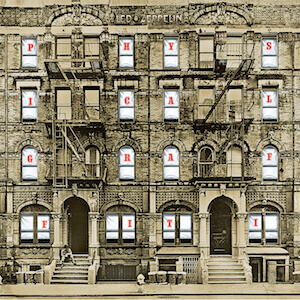

Álbum

Led Zeppelin - Physical Graffiti
Physical Graffiti es el sexto álbum de estudio de la banda británica Led Zeppelin, publicado el 24 de febrero de 1975, siendo la primera publicación del grupo con su propio sello Swan Song Records. Con 15 millones de copias vendidas, es el séptimo álbum de rock con más ventas de los años 1970.